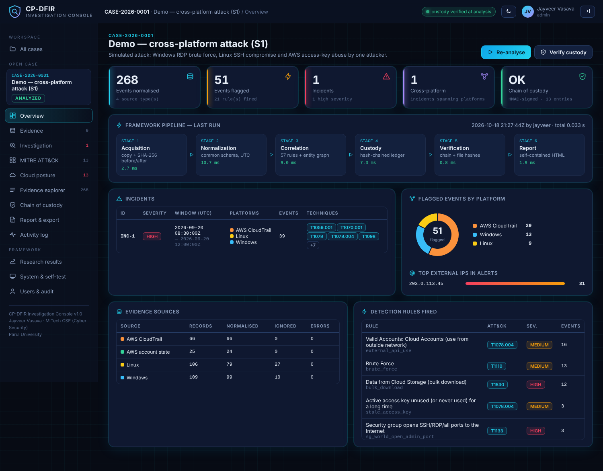
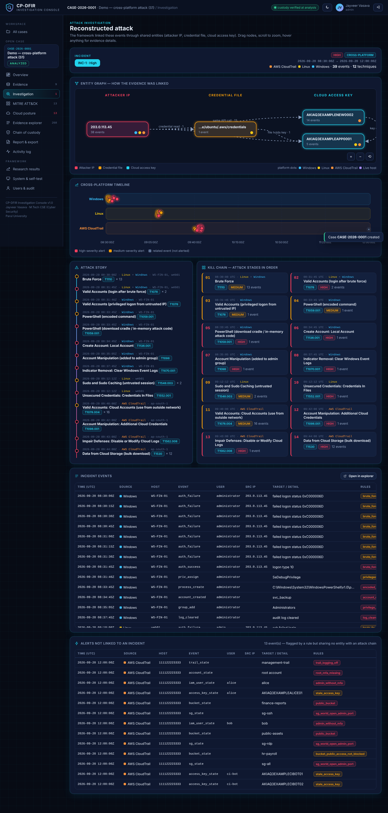
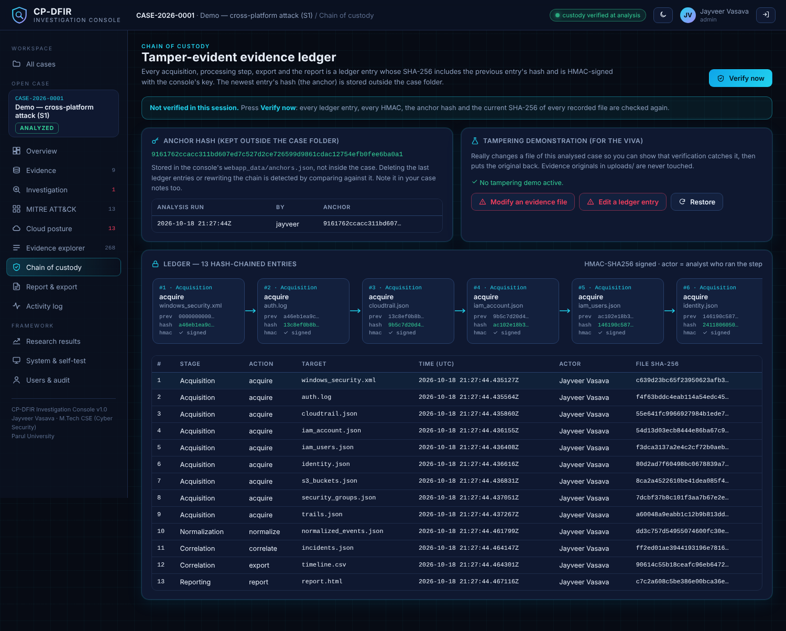
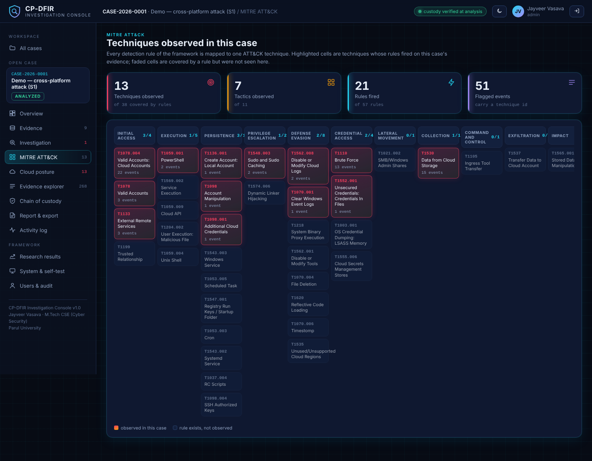
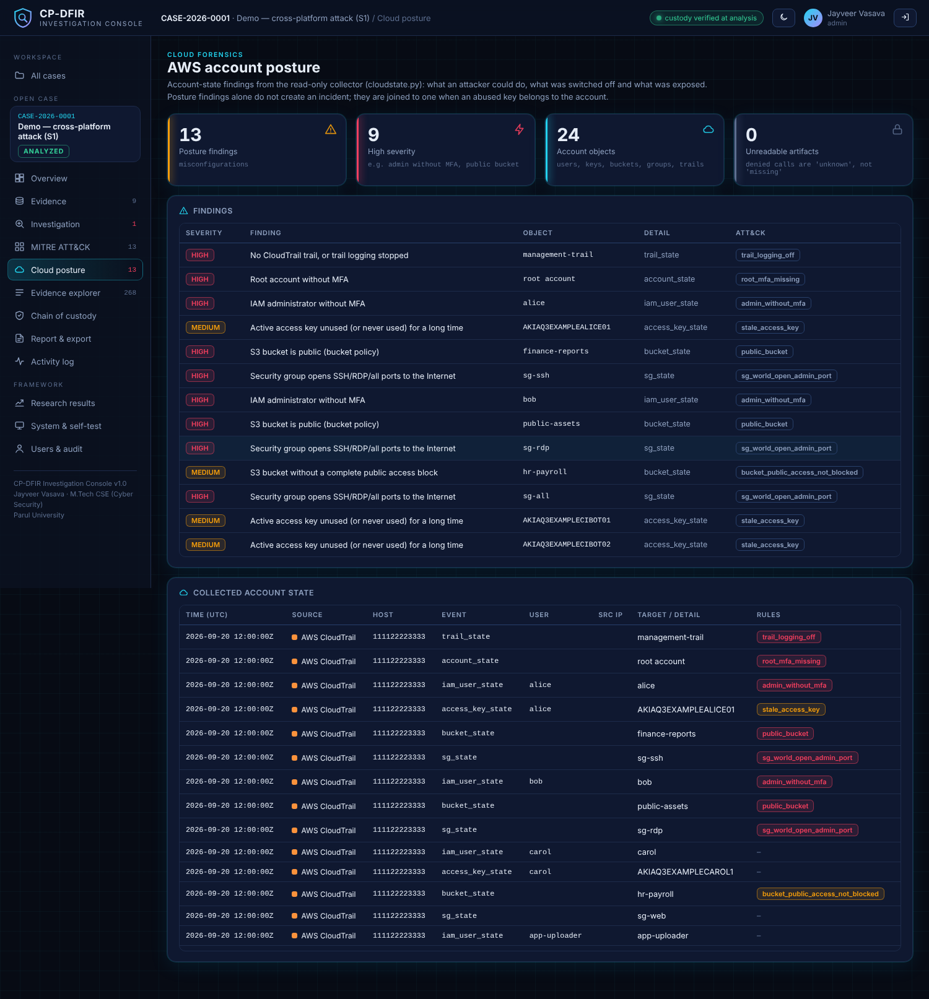
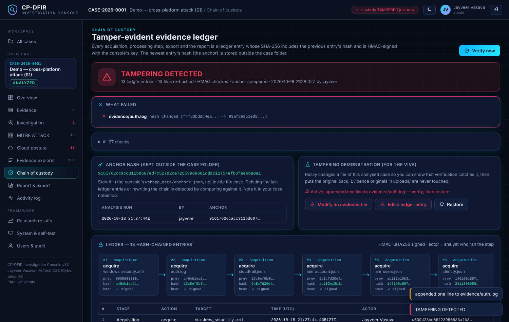

A Scalable Cross-Platform DFIR Framework
Automated evidence collection, correlation and cloud forensic investigation across Windows, Linux and AWS. M.Tech (Cyber Security) Phase-II, PIET, Parul University: Jayveer Vasava.
Live web consoleThe working CP-DFIR Investigation Console (Flask app)
Research dashboardOverview, correlation, MITRE, cloud, custody, scale
Evaluation reportScenario S1 to S5 detection metrics
Real-data reportResults on public EVTX attack samples
Sample forensic reportGenerated case report (DEMO case)
Source codeGitHub repository with README and tests
Screenshots





